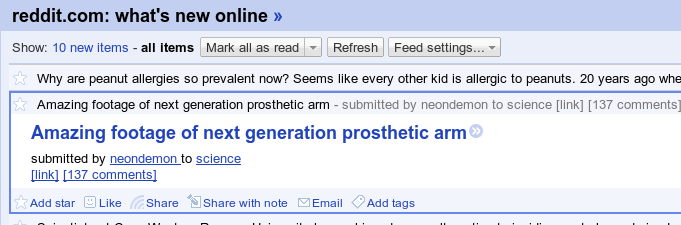
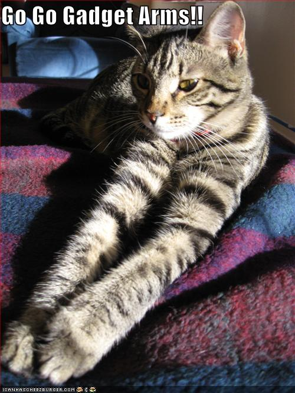

It feels like I spend about half my day doing this in Google Reader:

Oooh, that looks extremely interesting! *click*
Naturally, it's this bullshit every damned time:

...so I find myself with 156 browser tabs waiting for me to spend some attention. This takes 14 hours to go through. By the time I get to the last one, I can't even remember which unrelated reddit subject line this lolcat was paired with, since the postings tend to have really specific text, like "*sigh*" or "this blew my mind."
To solve this, I introduce: inline reddit.
What this does: it takes the reddit RSS feeds, and rewrites them. The images and videos linked to by a given reddit article are now placed in the article itself, so you have the content right in front of you.
To use it, point your feed reader here: http://inline-reddit.com/feed/
I use it with Google Reader, but it
should work with any feed catcher.
subreddits: You get them like this: http://inline-reddit.com/feed/?subreddit=AskReddit
multireddits: You get them like this: http://inline-reddit.com/feed/?multireddit=redditpets&user=reddit
private feeds: You get the feed info here, and use it like this:
http://inline-reddit.com/feed/?feed=<some_sha1_looking_hash>&user=<your_reddit_login_name>
DO THIS AT YOUR OWN RISK.
This means we'll be republishing possibly-personal information.
If you give these URLs to Google Reader, they will be discoverable by search.
If you change your password, the URLs will change too, but Google Reader caches any old feed items forever.
source code: is here.
complaints: go here.